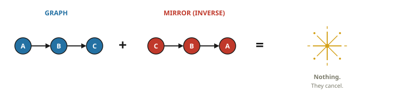
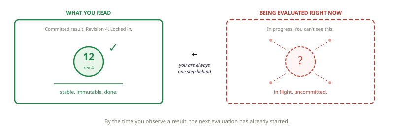
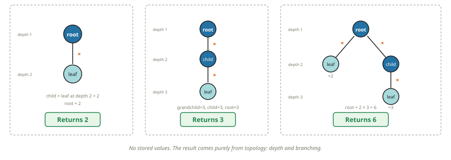
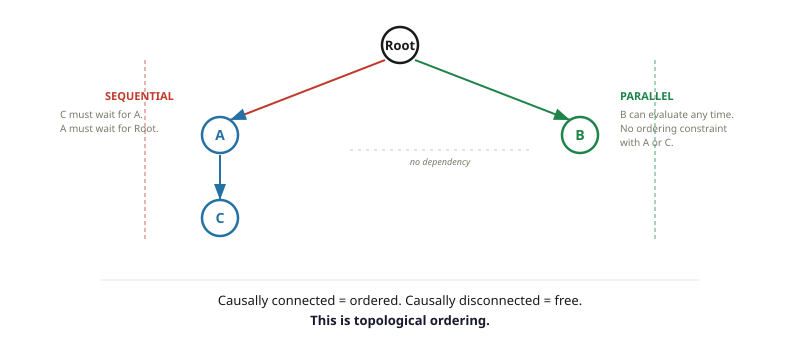
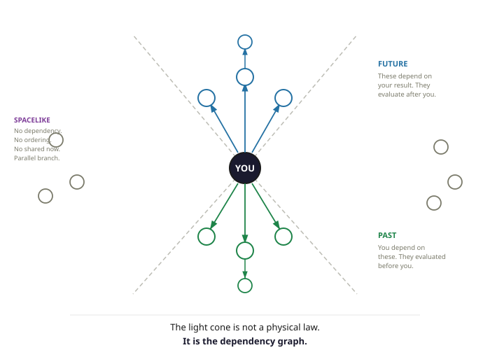
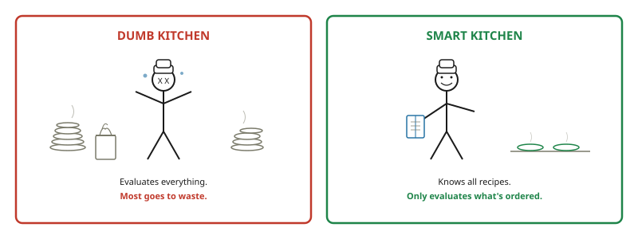
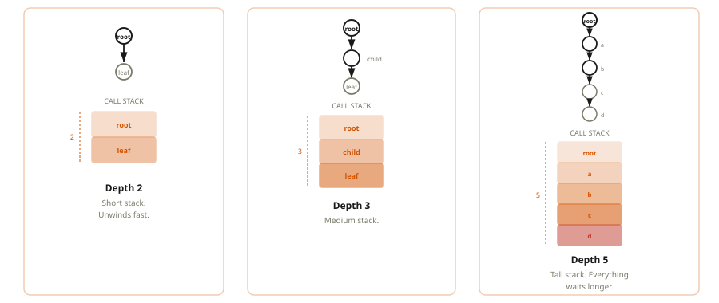
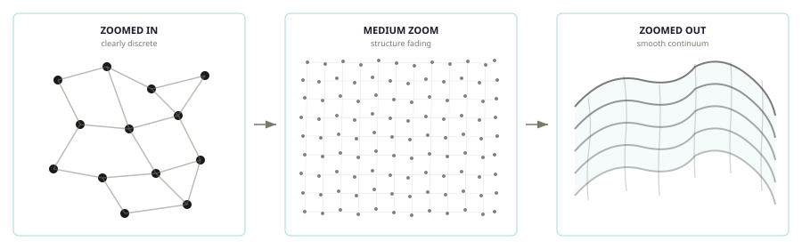

It is a curious thing to have a passion for a subject you can't quite grasp. I would imagine this is all that is really needed for the seeds of AI psychosis to take hold.
What follows is something of a "hobby" of mine, that while on the surface might seem odd, to "ponder the world" as a hobby. But, I'd argue it's actually a well-known fact that the best way to spend ANY amount of time on ANY amount of drugs is to sit back and go "YO what IF LIKE…"
Most of what follows is clearly by written AI, but this is more or less the result of my "pondering"/ranting about a subject I lack the skills to fully grasp for the last 8 or 9 years. So while the words are AI assited but I asure you the delusions are my own.
I have not figured out the exact number yet, but I imagine the odds of someone being committed rise significantly the moment they start uttering the words "I have a theory of the universe".
So to try and get ahead of whoever it was that plotted to get Kayne, I'd like to spell out what this actually is.
This is my best guess on how it could all work. Do I think it's right? I'd say the odds are as close to zero as something can be. However, if this somehow has any iota of a concept that inspires a thought in someone more capable, even if born out of pure opposition, than I'd consider that a win.
Most of what I describe below is things about our known universe that absolutely fascinate (scare the living fuck out of me). And I thought having it on the World Wide Web makes it easier for me to send as advance briefing for any family function or dinner party I should be expected to attend.
In a world where AI and and do almost everything I wanted one section that was just me.
Cheers,
A Very Serious Person
Before we get into anything — before graphs, before physics, before any of it — I need to tell you something uncomfortable.
You are Mario.
Not metaphorically. Your reality is taking place on a screen. Now there could be worse things than an existence as a 2D Italian plumber. I don't know what they are yet, but we are off to solve the mysteries of the universe so we can maybe tackle that problem along the way too.
The key takeaway is this: what you experience as "reality" is an output. It takes place on a screen. There is an engine underneath computing your world, and you have no direct access to it.
That sounds insane until you realize you deal with two-layer systems every single day. Right now you're reading text on a screen. Letters. Words. Nice fonts. But your computer doesn't store letters and fonts. It stores electrical states — ones and zeros. The text on your monitor is an output of what the computer is actually doing underneath. Two layers: the engine (processor, doing work) and the output (monitor, showing results). They look nothing alike. But one produces the other.
We're claiming reality works the same way. What you experience — space, mass, time, gravity — is the output layer. Underneath, the engine runs something simpler: a graph. Dots connected by lines. The engine evaluates the graph, and the output of that evaluation is what you experience as reality.
The punchline: you are a pattern of connections in an engine you can't see. And the only thing worse than being a 2D Italian plumber is finding out you're a graph representation of one.
Going forward, we're going to talk about two layers:
The Engine Layer — where computation happens. The actual structure of reality. Think: the Nintendo console. The desktop computer.
The Render Layer — what you experience. Your "reality." The output. Think: the TV screen. The monitor.

Before you say "isn't this just simulation theory" — it's more specific than that. Saying "reality is a simulation" is like saying "there's something going on." Cool, thanks. What we're proposing is a specific architecture — an engine that evaluates a graph, where the evaluation itself produces what we experience as physics — and then showing that this architecture actually explains things. Weird things. Things that have baffled physicists for a century.
Things like: Why can't you shield gravity when you can shield every other force? Why does the universe seem to "know" what you're going to measure before you measure it? Why do physics equations work perfectly backwards in time? How can two particles on opposite sides of the universe be instantly correlated? These are genuine unsolved mysteries and they all have the same answer. So let's get there.
What We're Claiming
Here's the overview of what we're proposing. You don't need to get all of this now — we're going to go through everything piece by piece.
You don't need to understand all of this yet. We're going to go through it piece by piece. By the end, it'll click.
The Toolkit
What Is a Graph?
Before we can talk about the universe being a graph, we need to talk about what a graph actually is. Good news: you already know. You just don't call it that.
A graph is dots connected by lines. That's it. Mathematicians call the dots "nodes" and the lines "edges," but the picture is always the same: things, and connections between them.
A family tree is a graph — people are dots, "parent of" is the line. A social network is a graph — profiles are dots, friendships are lines. A recipe is a graph — steps are dots, "must do first" is the line. You can't frost a cake before you bake it. You've been thinking in graphs your whole life.

The Key Rule
You can't evaluate a dot until you've evaluated everything it depends on. Can't frost the cake until it's cooled. Can't cool the cake until it's baked. The direction of the arrows matters. Dependencies flow one way.
Edges Carry Operations
In our graph, edges aren't just connections — they carry an instruction. Multiply. Divide. Add. The edge tells the parent node what to do with the child's result. The node itself has no opinion. It just applies whatever operation its edges say and passes the result up. The information is in the connections, not the dots. This is important: nodes store nothing. Everything meaningful is in the edges — the connections and the operations they carry.
Mirror Graphs: Opposites Cancel
Some graphs are exact mirrors — every connection reversed, every operation inverted. When they meet, they cancel completely. Like adding 5 and subtracting 5. Zero left. This will explain matter-antimatter annihilation later.

The Pivot: The Graph Evaluates Its Own Future
Graph foreplay is over. Here's where it gets real.
The output of evaluating a graph can feed back in as the next input. Each evaluation produces return values — and those return values modify the graph. New edges, changed connections, updated structure. The graph evaluates itself into a new state. That new state gets evaluated again. And again. The graph computes its own future. That's the whole trick.
Everything in the universe — space, matter, forces, you — can be described as dots connected by lines. Edges carry operations, not just connections. Some patterns evaluate to the same thing over and over. Some are mirrors and cancel on contact. And the graph's output becomes its own next input — the universe is a recursive function. These are all the building blocks we need.
How a Graph Evaluates — And the Proof That Topology Generates Values
Now let's actually build something. We've talked about what a graph is. Now let's talk about what happens when you evaluate one — when you actually run the computation. And then we're going to do something that looks like a magic trick: build a graph with no stored values whatsoever and show that it still produces meaningful numbers from pure structure.
How Evaluation Works
When you evaluate a graph, you start at the bottom. The nodes with no children — the leaves — go first. They return their values. Those values flow up to their parents. Each parent applies its edge operation to its children's values and returns a result. That result flows up to the next parent. All the way to the root.
You can never evaluate a parent before its children. The direction is fixed. Bottom up. Always.

What "Commit" Means
When a node produces a result, that result is locked in — "committed." The node's revision counter ticks up by one. The committed result propagates upward to any node that depends on it. Until the next evaluation, anything that asks this node gets the last committed result — not whatever's currently being computed.
This is the off-by-one. You always read the last committed result while the next evaluation is already underway. There is no way to see work in progress. By the time you look, the result has already been committed, and the next evaluation has already started.

The Proof: Topology Generates Values
Now for something that looks like a magic trick but isn't. Let's build a graph where nodes store absolutely nothing. No numbers. No labels. Nothing. And show that the graph still produces meaningful, distinct values from pure structure.
The rule is simple: a node's base value is determined by its depth in the graph — how many hops it is from the root.
depth 1 → returns 1 (the identity — no structure here) depth 2 → returns 2 (first prime) depth 3 → returns 3 (second prime) depth 4 → returns 5 (third prime) depth 5 → returns 7 (fourth prime)
The node doesn't store these numbers. It counts its hops to the root. That count IS the value. The topology IS the number.
Now connect nodes with multiply edges and watch what happens:

Why does this matter? Because 2 and 3 are prime numbers — the irreducible building blocks of all arithmetic. Every whole number is a unique product of primes. If topology generates primes, and primes generate all numbers, then topology alone is sufficient to generate all of arithmetic. No stored values. Just structure. Just connections. Just depth.
This is not a metaphor. It is a working demonstration. We are going to use this same principle to explain mass, gravity, time, and quantum mechanics. But first — how does the graph actually decide when to evaluate?
A graph with no stored values can generate the entire number system from pure topology. A node's value is derived from where it sits in the graph — its depth, its connections, the operations on its edges. Change the structure, change the value. The Fundamental Theorem of Arithmetic — every number factors uniquely into primes — is not a fact about numbers. It is a fact about graph topology. This is the proof of concept. Everything else builds on it.
The Engine: How the Graph Evaluates Itself
There Is No Clock
Here's the first thing to get straight about how the engine works: there is no clock.
The picture most people reach for is a video game. Tick. Compute everything. Commit the frame. Tick again. A global heartbeat, synchronized everywhere, the whole universe updating in lockstep.
That's wrong. And the evidence has been staring us in the face since 1905: there is no global "now." Einstein proved it. Two observers moving at different speeds genuinely disagree about whether two events happened at the same time. Not because their instruments are bad. Because simultaneous doesn't exist as a universal fact.
The reason: the engine has no global clock. Commits happen locally and continuously. Each node commits its result the moment its subgraph resolves — the moment everything it depends on has returned a value. Not when the universe says go. When the work is done.
Think of it like a river finding level. You don't flip a switch and tell the water to settle. Different parts settle at different rates depending on local terrain. The shape emerges from local rules, not a central clock. The river doesn't wait for a tick. It just flows.
How the Industry Evaluates Graphs
Here's the interesting thing: we already build systems that evaluate graphs. Lots of them. And after decades of different teams solving this problem independently, the industry has converged on the same approach every time. It's called topological ordering and it works like this:
If two nodes have no dependency between them, they can evaluate in any order — or simultaneously. If one depends on the other, it must wait.
That's it. That's the rule. Let's see it in three systems you might actually use.
Example 1 — The Spreadsheet
A spreadsheet is a graph. Every cell is a node. Formulas are edges. When you change cell A1, the spreadsheet doesn't recompute every cell. It walks the dependency graph forward from A1, recomputing only the cells that depend on it, in order.

Example 2 — React
React builds a graph of UI components. When state changes in one component, React walks the dependency subgraph from that node downward, evaluates the result, and commits the update. The key phases are: Trigger (state changes), Render (walk the subgraph, evaluate), Commit (apply the result — the paint). You never see the render in progress. You see the last committed state while the next render runs. That IS the off-by-one.
Example 3 — CPU Cache Coherence
When multiple CPU cores share memory, each core has a local cache. When Core 1 writes to an address, Core 2's cached copy is immediately marked stale — it must re-read on its next access. Core 2 always gets Core 1's last committed value. It never sees Core 1's state mid-computation. The propagation takes time — memory bus cycles — which is the hardware equivalent of C.
Three completely different systems, built by different teams, for different purposes. All three independently arrived at the same model: evaluate in dependency order, commit locally, propagate forward. Because it's the only model that is both correct and efficient. The universe, we're arguing, does the same thing. For the same reason.

What Topological Ordering Gives Us for Free
Here's where it gets interesting. Topological ordering has a property that turns out to be extremely familiar: there is no preferred traversal order.
You can walk the independent branches of the graph left-to-right, right-to-left, inside-out, random order — the committed results are the same. The output doesn't care about the process that produced it. There is no "right way around" the graph. All orderings produce the same answer.
This means there is no preferred frame. No "special" vantage point from which the traversal looks canonical. Two observers on independent branches of the graph genuinely have no shared "now" — not because of a physical law, but because there is no ordering constraint between them. Their evaluations are independent. Their commits happen in their own local order. Neither is "earlier" or "later" in any absolute sense.

C Is the Commit Rate of a Leaf
C — the speed of light — has nothing to do with light. Light is just the first thing we happened to measure that has this property.
C is the commit rate of a node with no subgraph. A leaf node. No children, no recursion, nothing to wait for. It commits immediately — one hop, done. That rate is C. The maximum possible commit rate, because there is literally no work to do before committing.
Everything else has a subgraph. The engine must recurse into children before the parent can commit. More subgraph means more recursion means slower commit rate. A photon is a leaf. That's why it travels at C. Not because of a special rule about photons. Because it has nothing to recurse into.
At the other extreme: a deep massive subgraph might recurse hundreds of levels before producing a result. Its effective commit rate is far below C. Near a black hole, the recursion is so deep that commits almost never complete. Time nearly stops — not because of a force, but because the stack never unwinds.
Lazy Evaluation — The Smart Kitchen
One more engine rule. The engine is smart — it doesn't evaluate answers nobody needs.
Restaurant analogy: a dumb chef pre-cooks the entire menu every morning. Insane. A smart chef has the recipe book but only fires up a dish when a customer orders it. The customer is the strict consumer. No customer, no dish — just a recipe sitting in a book.
A basketball has 1026 atoms, every one demanding values from its neighbors. Everything evaluates and commits constantly. But a lone photon in empty space? Nobody nearby needs its value. No strict consumer. The engine knows how to evaluate it but doesn't produce a definite result because nobody's asking.
The strict consumer doesn't just "observe" the particle. It demands a definite input for its own evaluation. The particle must commit. That commit IS what physicists call "collapse." Not mysterious. The evaluation was pending. A consumer demanded it. It committed.

The engine has no clock and no global tick. Each node commits locally when its subgraph resolves. The industry already builds systems this way — spreadsheets, React, CPU caches — and they all independently converged on topological ordering: sequential when dependent, parallel when independent. Apply this to the universe and special relativity falls out for free. No preferred traversal order means no preferred frame. The light cone is the dependency graph. C is the commit rate of a leaf node — maximum because there's nothing to recurse into. And nothing evaluates unless something downstream demands it.
The Five Axioms — Now That You Speak the Language
Five ideas. That's the whole framework. Now let's use them to explain the universe.
The Universe Through the Framework
What Is Mass? And What Is Energy?
Here's something that should bother you: mass and energy are the same thing. Einstein proved it in 1905. A paperclip contains enough energy to flatten a city. But why? Why would stuff contain astronomical amounts of trapped energy? And why is the conversion factor the speed of light, squared? What does light have to do with a paperclip? Physicists can use the equation perfectly. But "why c²" has never had a satisfying answer.
The rock on your table isn't glowing. It isn't moving. It isn't doing anything visible. Where is all that energy? And when you release it — nuclear bomb, matter-antimatter annihilation — where does it come FROM?
Pull back the curtain. A massive object is a region of the graph whose topology is stable. The subgraph's edges don't change. When the engine evaluates it, the same walk produces the same result every time. Not because anything is stored — because nothing around it changed. Same structure, same evaluation, same committed value.
A rock on a table isn't running a computation. It's a region of the graph that keeps evaluating to the same thing because no new inputs are arriving. That's mass. Stability. Topology that holds.
Remember the prime demo from Chapter 1.5? When you ask "what is the rock's mass?" you're asking the graph to evaluate that subgraph's topology. The result — the mass value — is not stored in the rock. It's what you get when you walk that particular structure. Change the topology, change the value.

E = mc² — The Bidirectional Walk
When the stable topology breaks — enough energy input to change the edges — the evaluation produces a different result. The delta between the old committed result and the new one propagates outward through the graph. That outward propagation IS the released energy.
How much energy? The walk through a subgraph of depth m has two legs:
Down: root evaluates its children, who evaluate their children, all the way to the leaves. That's m hops. Each hop travels at C.
Up: the results propagate back upward to the root. Another m hops. Also at rate C.
The down leg and the up leg are the same rate in two independent directions through the same structure. The graph is symmetric — no preferred direction. Down and up are the same speed.
Total energy: m × C (down) × C (up) = mc²
The c² isn't a magic number. It's the graph telling you it's bidirectional. The same propagation rate in two orthogonal directions through the same topology. That's why tiny mass equals enormous energy: the engine's base rate C is enormous, and it appears twice.

Einstein showed in 1905 that mass and energy are interchangeable. The c² factor (~9 × 1016) is why tiny mass = astronomical energy. Nuclear weapons exploit partial conversion. Antimatter annihilation achieves total conversion. In this framework: the bidirectional walk at rate C, applied to a subgraph of depth m.
When an electron meets a positron (its mirror graph), they cancel completely. All topology vanishes. The evaluation produces identity — 1, vacuum. Every operation that was maintaining the stable topology now propagates outward as pure released energy. In the graph: mirror topologies cancel, delta = all committed operations escaping as leaf-node propagation.
Mass is stable topology — a region of the graph that evaluates to the same thing every walk because nothing around it changed. Energy is what propagates when that stability breaks. They aren't two different things — they're the same thing in two different states. E = mc² is the bidirectional walk: the engine traverses m levels down at C and m levels back up at C. Same rate, two directions, no preferred direction. That's where c² comes from. Not a mystery. A topology.
What Is Gravity? And Why Can't You Block It?
Gravity is weird. A suspicious kind of weird.
There are four fundamental forces: electromagnetic, strong nuclear, weak nuclear, and gravity. The first three can be shielded. Radiation? Lead blocks it. EM fields? Faraday cage. Strong force? Doesn't even reach past the atomic nucleus. But gravity? Nobody has ever found a way to block it. Not with any material, field, or arrangement ever tested.
Einstein's equivalence principle: no experiment from inside a sealed room can tell whether you're sitting in a gravitational field or accelerating. None. An elevator on Earth and a rocket accelerating in space are completely identical from the inside. Why would a "force" be indistinguishable from acceleration?
Physicists spent decades hunting the graviton — the carrier particle. Every other force has one. Gravity has never produced one.
Three clues. Three ways gravity is fundamentally unlike every other force. Maybe it's not a force at all.
What Is a Call Stack?
Before we explain gravity, we need to talk about something from computer science. Don't worry — you don't need to write code. You just need to understand one concept: the call stack.
When a function calls another function, the computer makes a note: "I'm currently in the middle of doing something, wait here while I go do this other thing, then come back." That note goes on a stack — a list of things waiting for an answer. When the inner function finishes, it returns a result, and the waiting function picks up where it left off.
Here's the key: everything on the stack is waiting. Nothing else can run in that slot until the stack unwinds.
f() calls g()
g() calls h()
h() calls i()
STACK: [ f — waiting ]
[ g — waiting ]
[ h — waiting ]
[ i — RUNNING ]
i() finishes. Returns. h() resumes.
h() finishes. Returns. g() resumes.
g() finishes. Returns. f() resumes.
Stack unwinds. Done.
Now imagine i() is slow. Very slow. The entire stack — f, g, h — is frozen, waiting. Everything that depends on f getting its answer is also waiting. The deep call holds everything up.
Now imagine the function calls itself recursively:
evaluate(root) calls evaluate(child) evaluate(child) calls evaluate(grandchild) evaluate(grandchild) calls evaluate(leaf) evaluate(leaf) → returns immediately (no children) evaluate(grandchild) → returns evaluate(child) → returns evaluate(root) → returns
The stack depth equals the subgraph depth. Shallow subgraph: short stack, unwinds fast. Deep subgraph: tall stack, takes longer to unwind. Everything waiting on the root has to wait for the entire stack to unwind before it gets an answer.

The Pyramid
Now imagine plotting every node in a region of the graph. Below each node, draw a bar proportional to that node's call stack depth when evaluated. Leaf nodes get a bar of height 1. Nodes with shallow subgraphs get short bars. Nodes near or inside a massive subgraph — a stable, deep structure — get very tall bars.
What shape do you get?

Invert It. That's Spacetime.
Now do something to that pyramid: flip it upside down.
The tall bars become deep wells. The flat edges stay flat. You're looking at exactly what spacetime curvature looks like in every textbook diagram you've ever seen — a fabric being pulled downward by mass at the center, flat at the edges.
That's not a coincidence. The call stack topology and spacetime curvature are the same structure, described from two different perspectives. In the engine: tall call stacks near mass. In the render layer — your reality — deep wells in the fabric of spacetime.

What Deep Call Stacks Do to Routing
A deep call stack doesn't just delay the nodes waiting on it. It changes how the system routes work around it.
In any real computing system — network routers, OS schedulers, CPU pipelines — when a path is congested or a computation is deep, the system updates its routing table. It finds cheaper paths. Work gets routed around the pressure zone, not through it. This isn't a special rule — it's the system optimizing for the cheapest available path. It happens automatically.
The same thing happens in our graph. A massive subgraph builds a deep call stack every evaluation. Nearby nodes that need to propagate their results have to route through this region. The stack is deep. The cost is high. The routing table updates to reflect this: paths through the mass zone are expensive. Paths around it are cheaper.
Everything follows the cheapest path through the routing table. But the cheapest path through a region of high stack pressure isn't straight. It curves. It bends around the pressure zone. That curve is what you experience as gravity.

This IS Gravity. Now Dissolve the Three Mysteries.
Look back at the three clues from the opening. They all dissolve at once.
Why you can't shield gravity. Every other force transmits via a signal through edges — photons carry electromagnetism, gluons carry the strong force. Block the edge, block the signal. But gravity isn't a signal. It's the call stack depth of the subgraph your own evaluation depends on. Your shield is a subgraph in the same graph. When your shield evaluates, it shares the same call stack as everything near the mass. The routing pressure modifies your shield's edges too. There is no layer in your reality — no material, no field, no arrangement — that can reach into the engine and change stack depth. You are Mario. You cannot reach into the console.
Why gravity is indistinguishable from acceleration. Acceleration means your position edges are being rewired — you're moving through the graph. Rewiring edges takes evaluation steps. Those evaluation steps add to your local stack depth. A massive subgraph nearby also adds to your local stack depth. Both increase the depth of the stack your commits wait behind. Same effect. Same experience. Same thing at the engine level. That's why Einstein couldn't tell them apart. They are the same mechanism.
Why there's no graviton. A graviton would be a particle that carries the gravity signal — like a photon carries electromagnetism. But gravity isn't a signal. It's the routing table being updated by stack depth. "What particle carries gravity?" is like asking "What particle carries network congestion?" Nothing. It's a system property. A consequence of the topology. Not a thing that travels.
1919, Eddington: during a solar eclipse, stars near the sun appeared shifted from their expected positions. Light follows the cheapest path through the routing table. Near mass, routing costs are higher, cheapest path curves. Einstein predicted exactly this deflection. Confirmed.
A black hole is a subgraph so deep that evaluation never completes. The call stack builds without unwinding. The routing table around it is updated to maximum cost — there is no affordable path out. Not "gravity so strong light can't escape" but "stack so deep nothing can commit." And unlike General Relativity's prediction of a singularity — infinite density at the center — there's nothing infinite here. The subgraph is finite. The stack is deep but finite. The computation just never finishes. Stack exhaustion, not mathematical breakdown.
2015, LIGO detected ripples from two black holes merging 1.3 billion light-years away. When mass changes — subgraph restructures, stack depth changes — the routing table update propagates outward through the graph. Confirmed to travel at C, the rate of one commit propagating one hop.
Gravity is not a force. It is the call stack pressure created by a deep subgraph during evaluation. Plot call stack depth across the graph and you get a pyramid. Flip it and drape a spacetime fabric over it — that's Einstein's curved spacetime, derived from the same topology. The routing table updates to route around the pressure zone. Everything follows the cheapest path. The path curves toward mass. You can't block gravity because the stack is part of your own evaluation — you share it whether you want to or not. There is no signal to block. The topology is not optional.
What Is Space?
Space has a minimum size. Below approximately 10−35 meters, the equations don't just break down — the math itself breaks. Space is granular at the smallest scale. Like zooming into a photo until you find the pixels.
And: all the information in any 3D volume of space can be completely described by its 2D surface. Not approximately — fully. The information content of a room scales with the area of its walls, not its volume. This is the holographic principle. It makes no sense if space is a smooth 3D container.
Space isn't a box. It's the large-scale pattern of connections in the graph. Distance = hop count. Zoom out far enough and the hops look smooth. That smoothness is what we call "space."

Distance Is Hops
Two nodes separated by 3 intermediate nodes? Close. A billion nodes between? Far. There's no invisible "space" underneath the graph. The connections ARE the distance. The minimum distance in the universe is one hop — one node. That's the Planck length: one pixel.
Position = Committed Connections
Being "somewhere" means having committed position edges to specific neighbor nodes. Not having a definite position means having pending position edges to multiple possible neighbors simultaneously. That IS superposition — coming up in the next chapters.
The Holographic Principle: Mario 64 on a 2D Screen
Super Mario 64 renders a full 3D world — castles with depth, perspective, volume. But the screen showing it is completely flat. 2D. Everything you experience as 3D is encoded on a 2D surface.
Physicists found the same thing in nature. Bekenstein showed that the information content of a black hole scales with its surface area, not its volume. 't Hooft and Susskind formalized it: all information in any 3D region can be encoded on its 2D boundary. Like a hologram.
In this framework: the engine doesn't need to organize information in 3D. It organizes information however is most efficient — possibly a 2D surface encoding. The 3D experience is the output. You are Mario 64 — a 3D experience produced from a 2D information structure.
1993, 't Hooft: information in any volume can be encoded on its boundary. Bekenstein: black hole entropy scales with surface area. Maldacena's AdS/CFT (1997): a lower-dimensional boundary theory fully describes a higher-dimensional bulk. In this framework: the engine stores information however it wants; the 3D experience is the output.
Space isn't a box. It's the graph's shape — the pattern of connections between everything. Distance is hop count. Minimum size is one node — one pixel. The 3D world might be output from information encoded on a 2D surface, like Mario 64 on a flat screen. There is no "space" underneath the graph. The graph is all there is.
What Is Time? (And Why Does It Run Differently in Different Places?)
Every fundamental physics equation works perfectly backwards. Newton, Maxwell, Einstein, Schrödinger — reverse time in any of these equations and you get equally valid solutions. Drop a ball forward, it falls. Run it backwards, it rises. Both are valid physics.
But reality clearly has a direction. Eggs break and don't unbreak. You get older. The Big Bang happened and we're moving away from it. There IS an arrow. Where is it? Nobody has found it in any equation. A century-long argument.
And separately: time genuinely runs at different speeds in different places. Clocks near Earth tick slower than clocks in orbit. Not broken — genuinely fewer ticks. The clocks near Earth age less. Your GPS phone corrects for this every second.
Time Is a Revision Counter
Time is not a dimension. Time is not a river. Time is the revision counter on a node — how many times it has committed a result. More commits = more elapsed time. Fewer commits = less elapsed time. That's all time is.
We measure time by counting changes: clock ticks, pendulum swings, heartbeats, atomic oscillations. Every "clock" is a change counter. We've never measured time directly. We've always measured change and called it time.

GPS — This Is Real
GPS satellites orbit at altitude where the gravitational stack depth is lower — less mass nearby, shallower call stacks, faster commit rates, faster clocks. The difference is about 45 microseconds per day. Without correction, GPS would drift by roughly 10 kilometres per day. Every satellite continuously corrects for this. Your phone's navigation depends on time dilation being real and exactly as predicted.
Why Time Has a Direction — The Fibonacci Dependency
Here's something that will make every grade 11 math teacher beam with pride.
Remember the Fibonacci sequence? 1, 1, 2, 3, 5, 8, 13… Each number is computed from the two before it. You can't compute the 5th term without the 4th. You can't get the 4th without the 3rd. The computation has a direction. A dependency chain. It only runs one way.
The engine works the same way. Each walk's committed results become the input to the next walk. Walk 4's output feeds Walk 5. Walk 5's output feeds Walk 6. You cannot run Walk 5 without Walk 4's committed output — because Walk 5's input IS Walk 4's output. The dependency runs one direction. Forward only.
That dependency chain IS the arrow of time. The arrow isn't missing from the equations. It's one layer deeper. The equations describe the committed results — the photographs. A photograph has no arrow. You can run a film forward or backward and see the same frames. The equations describe what's in the frames. Of course they work both ways.
The arrow lives in the computation that produced the frames. Not in the output. In the process. In the engine.
And sorry — no time travel. Committed results cannot be uncommitted. Walk 4 ran. Results committed. They are now the inputs to Walk 5. You cannot change Walk 4's output without changing Walk 5's input, which changes Walk 6's input, which changes everything downstream. The function ran. There is no undo.
Grade 11 math teachers everywhere are beaming right now.
Two Observers — The Speed of Light as an Information Limit
Place two observers — call them A and B — at different positions in the graph on independent branches. Neither depends on the other. Let the root walk.
A evaluates and commits at step 4. B evaluates and commits at step 10. They are on parallel branches — no ordering constraint between them. But notice what each can see:
When A commits at step 4, B has not yet committed this walk. A can only read B's result from the previous walk — the last committed value. A cannot see B's current state.
When B commits at step 10, A committed earlier this walk. B can read A's result from this walk. But A won't be re-evaluated until the next walk. A cannot see B's current state either.
Neither observer ever has access to the other's current computation. They always read each other's last committed value. The gap between their commits is real and unavoidable. Information about B's state at step 10 cannot reach A until the next walk propagates at C.
This is the speed of light as an information limit. Not a physical law imposed on the universe. A structural consequence of topological ordering: you can only read last committed results, and commits propagate at C.
Motion Eats Commits Too
Moving fast through the graph means your position edges are being rewired at a high rate. Rewiring takes evaluation steps. Those steps add to your local call stack depth. More rewiring = deeper stack = slower commit rate = fewer revisions per external walk = less elapsed time. At C, all evaluation steps go to rewiring — zero left for internal state changes. Zero revisions. Zero elapsed time. That's why a photon experiences no time.
Cosmic ray muons are created about 15km above Earth's surface. They decay in 2.2 microseconds — should travel about 660 metres before decaying. But they reach the ground. At 99.5% of C, almost all their evaluation steps go to motion. Almost none go to internal state changes. They experience much less time. Their revision counter barely moved. Confirmed experimentally.
Twin A stays home. Twin B travels near light speed and returns. B is genuinely younger — fewer revision count increments, fewer cell divisions, fewer heartbeats. Confirmed directly by atomic clocks flown on aircraft and GPS satellites.
Time is a revision counter — how many times a node has committed a result. Near mass, the call stack is deeper, commits are slower, the counter ticks less often: time dilation. Moving fast, evaluation steps go to rewiring instead of internal state: velocity time dilation. The equations work backwards because they describe committed results — photographs with no arrow. The arrow lives one layer deeper, in the dependency chain of the computation: each walk's output feeds the next walk's input, like Fibonacci. The computation runs one direction. No undo. No time travel.
The Quantum World: Why Small Things Act So Strange
Double-slit experiment: fire particles one at a time at a barrier with two slits. Over thousands of shots, they build up an interference pattern on the screen — as if each particle went through both slits simultaneously as a wave. Put a detector at one of the slits to see which one the particle actually went through — the interference pattern vanishes. Looking at it changed the result.
Quantum eraser: run the experiment WITH a detector at the slit. After the particle hits the screen and its dot is already recorded, erase the which-path information from the detector. Sort the results. The interference pattern comes BACK in the erased subset. The dot is already on the screen. How can erasing information after the fact change a pattern that's already been recorded?
Confirmed hundreds of times. Not a measurement error. Real.
Four ways to react: (1) particles are magic and choose to be mysterious, (2) the universe literally knows the future, (3) nothing is real until observed, (4) we're misunderstanding what "before" and "after" mean in this context. We're going with option 4.
Smart Kitchen Revisited
Remember the smart chef from Chapter 2? A particle in flight with nobody asking about its position. No strict consumer. The engine knows how to evaluate it — it has the recipe — but nothing is demanding the result. Pending. Possible positions, nothing committed. Both paths through the slits: pending. Neither committed.

The Double-Slit
Step 1: Particle in flight — no consumer, no demand. Both paths through both slits: pending.
Step 2: The engine evaluates all pending paths without committing — it knows the recipes.
Step 3: Both pending paths overlap at the screen. Where they align, the probability amplitude adds up: bright band. Where they cancel: dark band. That's the interference pattern.
Step 4: The screen has 1026 atoms, every one a strict consumer. Forces commitment — one position commits. One dot. Over thousands of particles: the interference bands fill in.
Why a Detector Ruins the Pattern
A detector at the slit is a strict consumer. It demands: "which slit did the particle go through?" That demand forces commitment. The pending dual-path evaluation must resolve — one path commits, the other doesn't. Once committed to one slit, there's only one path to the screen. No two-path overlap. No interference. The detector didn't physically disturb the particle. It demanded a committed result. The evaluation was forced. The pattern died.
Why the Quantum Eraser Isn't Time Travel
Here's what's actually happening in the quantum eraser, stated plainly.
Nothing is being computed "all at once." The particle's path is not being retroactively changed. What's happening is simpler: evaluation is lazy, and the eraser is upstream in the dependency chain.
When the screen demands the particle's position, that demand cascades backwards through the dependency graph — through the slits, through any detectors. The eraser node sits in that dependency path. The cascade reads whatever state the eraser is in at the moment the pull arrives.
Eraser OFF: the cascade hits "which-path erased." No committed path. Both paths still pending. Interference pattern emerges.
Eraser ON: the cascade hits "which-path recorded." Strict consumer. One path commits. Interference destroyed.
There is no "after the fact." The particle's dot appears on the screen. But the evaluation of WHICH path it took — the pending evaluation — was still in flight through the dependency chain. The eraser is part of that chain. Its state at the time of the pull determines the outcome.
It's like editing a spreadsheet formula before pressing Enter. The dot appearing on screen isn't "Enter" for the path evaluation. The path evaluation cascades through the eraser. The eraser's state at that moment is the formula. You can change the formula before the cascade reaches it.
Why Basketballs Don't Do This
A basketball has 1026 atoms. Every single one is a strict consumer demanding definite inputs from its neighbors. There are no pending evaluations in a basketball. Every possible quantum state gets committed instantly by the overwhelming demand of surrounding atoms. Too many consumers. No pending paths survive. That's decoherence: quantum behavior dies in anything large and warm because everything is demanded immediately.
Quantum behavior requires pending evaluations — uncommitted states. Any warm, dense environment instantly demands committed results from every node within it. Isolated particles in cold, empty space maintain pending states easily. The central challenge of quantum computing is keeping qubits isolated from consumers long enough to compute with pending states before everything commits.
Kim et al. (1999): entangled pairs sent through a double-slit setup. One particle hits a screen. The other is routed to a detector that can preserve or erase which-path information. When which-path is erased — even after the partner has hit the screen — interference reappears in the sorted results. In this framework: the eraser is upstream in the dependency chain. The pull from the screen cascades through the eraser. The eraser's state determines whether which-path commits.
Quantum mechanics is lazy evaluation. The engine knows how to evaluate every possible outcome but only commits a definite result when something demands one. Small, isolated things: no consumers, pending evaluations survive, wave-like behavior, interference. Large, dense things: consumers everywhere, everything commits instantly, classical behavior. The quantum eraser isn't time travel — the eraser is upstream in the dependency chain, and the pull from the screen cascades through it. The eraser's state at the moment of the cascade determines the outcome. Not backward in time — upstream in the dependency graph.
Entanglement: The Universe's Shortcut
Einstein called it "spooky action at a distance" and spent years trying to explain it away. Two particles interact, then separate — fly to opposite sides of the universe. Measure one: the other instantly has a correlated value. Not correlated-after-a-light-speed-signal. Instantly.
John Bell proved in 1964 that the correlations are too strong to be explained by hidden information the particles carried from the start. Something connects them. The 2022 Nobel Prize in Physics confirmed this conclusively.
How?
The answer is in the value subgraph. When two particles interact, their value subgraphs merge — they share a node. Their position edges can be rewired anywhere in the graph — they can move to opposite ends of the universe. But their value subgraph doesn't care about position edges. The shared node is still there. Still shared.

Why Not Faster-Than-Light Communication
The results are correlated but random. Neither observer knows what question the other asked or what value they got until they compare notes through a normal signal at C. You can't encode information in randomness. It's like two people opening different envelopes from a pre-shuffled deck — the results are correlated by the deck, but neither person's opening tells the other anything useful until they call each other.
1964: Bell proved mathematically that the observed correlations are too strong for any model where the particles carry pre-determined hidden values. Something genuinely nonlocal connects them. 2022 Nobel Prize (Aspect, Clauser, Zeilinger) confirmed this experimentally with loophole-free tests. In this framework: the nonlocal connection is the shared value subgraph node. Not a signal — a shared evaluation dependency.
Entanglement is a shared evaluation dependency. Two particles share a subgraph node. Their position can change — they can be on opposite sides of the universe — but the value subgraph doesn't care about position. When either is evaluated, the shared node commits, and both read from the same committed result. No signal travels. The correlation was in the topology all along. Not spooky. Just a graph structure that doesn't care about distance.
Why Is the Universe Expanding? (And Getting Bigger Faster?)
Edwin Hubble discovered in 1929 that every galaxy is moving away from every other galaxy — the universe is expanding. In 1998, Perlmutter, Schmidt, and Riess discovered it's not just expanding — it's accelerating. Getting faster. The standard explanation requires "dark energy" — an invisible substance or field that comprises 68% of the universe, drives the expansion, and has never been directly detected. The biggest component of the universe. Completely invisible. A little suspicious.
What if nothing is pushing? The engine evaluates the graph. Some of those evaluations return values that add new nodes and edges to the graph. More graph structure means more nodes to evaluate, which means more return values, which means more new nodes. The graph grows by computing itself.
The rate of growth is proportional to the current size of the graph — more nodes means more evaluations means more growth. Growth proportional to size means accelerating growth. Exponential expansion. No dark energy. No mysterious pushing force. Just: the computation creates the structure it computes.

Hubble (1929): galaxies receding in all directions. Perlmutter, Schmidt, Riess (1998, Nobel 2011): expansion is accelerating. Standard cosmology requires dark energy — 68% of the universe's energy content, never directly detected. In this framework: no separate substance. The acceleration IS the graph growing through its own evaluation.
The universe expands because evaluation creates structure. Each walk produces return values that add new nodes and edges to the graph. More graph means more evaluation means more new nodes. Growth proportional to size produces acceleration automatically. No dark energy needed — just a graph whose computation generates its own substrate.
What We Don't Know
Honest Gaps
A framework that claims to explain everything without identifying where it breaks is a story, not a theory. These gaps are real and hard.
These are genuine obstacles. Any one of them could be fatal to the whole picture. That's fine. That's how this works. You lay out what you think, you lay out where it breaks, and you hope someone smarter can get further than you did.
Everything Mapped
The Complete Reference Table
| Physics Concept | In This Framework (v22) | Computer Analogy |
|---|---|---|
| Space | Large-scale graph shape. Connectivity pattern. | Network topology. Hop count = distance. |
| Position | Which position-edges this node is adjacent to right now. | Pointer to current memory address. |
| Motion | Position edges being rewired. No evaluation required. | Pointer being updated. No read, just reassignment. |
| Mass | Stable subgraph topology. Returns same result every walk because nothing around it changed. | Deterministic function returning same output for same unchanged input. |
| Energy | Return value of an evaluation that propagates outward to new nodes. | Function output feeding next function call. Recursive. |
| E = mc² | Bidirectional walk of depth m at rate C. Down leg (m×C) × up leg (C) = mc². Symmetric graph, no preferred dir. | Recursive function call: cost of calling down m levels × returning up m levels at same rate. |
| Antimatter | Inverted subgraph topology. | Function whose output negates another's at every node. |
| Annihilation | Mirror topologies cancel. Product = 1 (identity, vacuum). All evaluation propagates outward. | Composed inverse functions = zero residue. Flush output. |
| Time (experienced) | Revision counter. How many times this node has committed a result. | Iteration counter. Increments each time the function returns. |
| Arrow of time | Each walk's output is the next walk's input. Fibonacci dependency. Cannot un-commit. | Program execution order. Can't un-run code. |
| Time dilation (gravity) | Deep call stack nearby → slower commits → revision counter ticks less often. | Deep recursive call queuing everything behind it → lower throughput. |
| Time dilation (velocity) | Position-edge rewiring costs evaluation steps → fewer steps for internal state → slower revision rate. | I/O consuming cycles → fewer cycles for compute. |
| Speed of light (C) | Commit rate of a leaf node. Stack depth 1. No subgraph. Maximum possible rate. Not a limit — a baseline. | Base case function return time. Returns immediately, no recursion. |
| Gravity | Deep call stack from massive subgraph creating routing pressure. Routing table updates. Paths curve. | Deep recursive call causing OS scheduler to route work around it. |
| Can't shield gravity | Stack is part of your own evaluation. You share it whether you want to or not. Not a signal — a topology. | Can't avoid being on the same call stack. No opt-out. |
| Equivalence principle | Acceleration and gravity both add depth to local call stack. Same effect. Same mechanism. | CPU load from motion vs. from deep calls: same throughput impact. |
| Spacetime | The routing table — edge weights and cheapest paths. Updated continuously by stack pressure. | Network routing table. Updated when congestion detected. |
| Black hole | Subgraph so deep the call stack never fully unwinds. Commits never complete in that region. | Infinite recursion / stack exhaustion. Nothing downstream can proceed. |
| Black hole singularity | No singularity. Stack exhaustion, not infinity. Finite subgraph, computation never finishes. | Infinite loop, not stack overflow. Finite code, non-terminating. |
| Gravitational waves | Changes in subgraph structure change stack-depth pattern. Update propagates outward at C. | Routing table update propagating through network at max speed. |
| Wave function | Pending evaluation. Multiple possible committed states, nothing resolved yet. | Lazy thunk. Defined, not forced. |
| Collapse | Strict consumer demands a result. Pending evaluation commits. One definite answer. | Forcing a lazy thunk. Evaluates and caches. |
| Superposition | Multiple pending position edges simultaneously. Not yet committed. | Unevaluated expression with multiple possible results. |
| Interference | Multiple pending paths overlap. Amplitudes add or cancel before commitment. | Multiple lazy evaluations combining or canceling before forcing. |
| Decoherence | Dense environment = many strict consumers = immediate commitment of all pending states. | Many consumers of lazy value = high probability of forced evaluation. |
| Quantum eraser | Eraser is upstream in dependency chain. Screen's pull cascades through eraser's current state. | Editing spreadsheet formula before pressing Enter. Upstream state. |
| Entanglement | Shared value subgraph node. Co-resolves when either particle is evaluated. | Shared pointer. Same data regardless of where each variable lives. |
| No global "now" | No global clock. Local commits. Two independent nodes have no shared commit moment. | Distributed system with no global clock. Eventual consistency at C. |
| Special relativity | No preferred traversal order in topological evaluation → no preferred frame. | Deterministic function: same output regardless of evaluation order. |
| Light cone | The dependency graph. Inside: topologically ordered. Outside: causally disconnected, parallel branch. | Function call graph. Callers must wait. Non-callers are independent. |
| Committed result | Node's last committed value. Always one evaluation behind current computation. | Cached result. Current computation invisible until it commits. |
| Holographic principle | Graph info can be encoded on boundaries. 3D output from 2D information structure. | Mario 64: 3D game output from 2D screen encoding. |
| Expansion | Evaluations that add new nodes and edges. Graph grows through its own computation. | Self-modifying code. Evaluation extends the codebase. |
| Accelerating expansion | Growth proportional to current graph size. Positive feedback. Exponential. | Exponential growth. More code → more evaluation → more code. |
| Planck length | One hop. Minimum graph spacing. One node. | One pixel. Minimum addressable unit. |
| Planck time | Possibly one leaf-node commit cycle. Smallest measurable change interval. | Smallest measurable cycle time. The individual commit is invisible. |
| Mathematics | The universe's map of its own topology. Drawn in notation instead of lines. | Documentation written by the system about itself. |